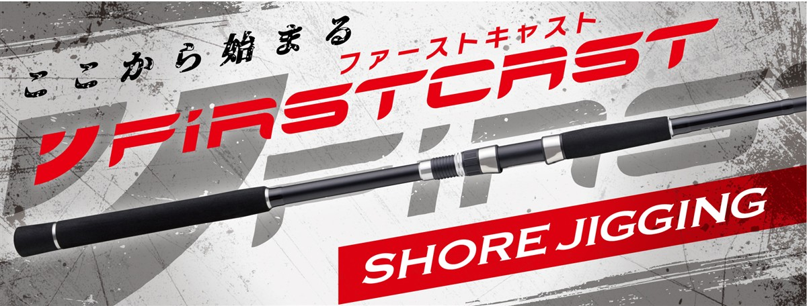
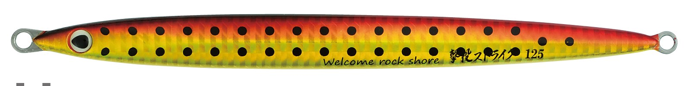
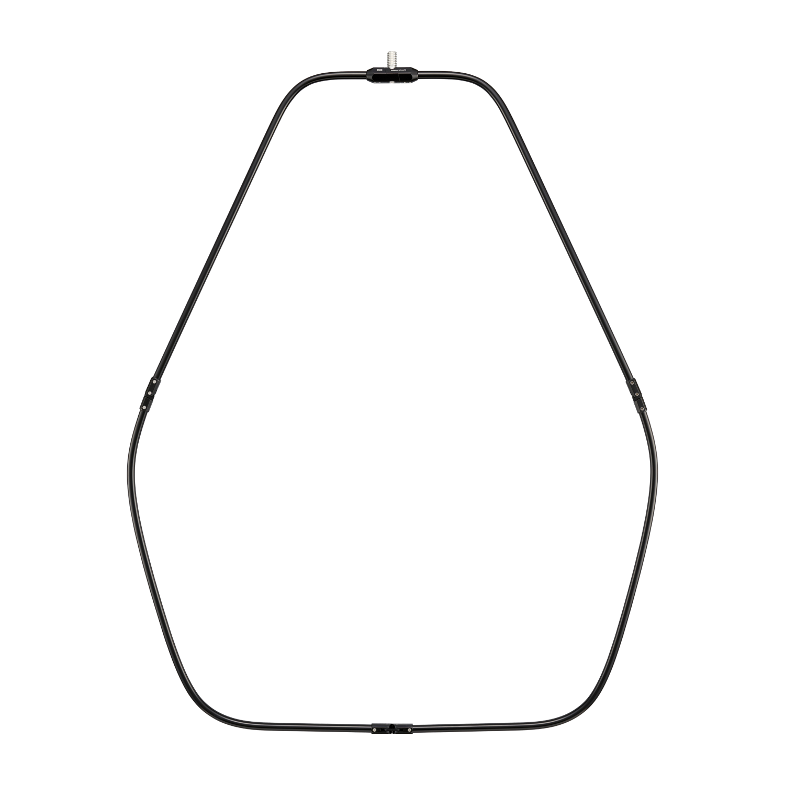

NEWファーストキャスト ショアジギングモデル
（NEW FIRSTCAST Shore Jigging model）
NEWファーストキャスト ショアジギングモデル（NEW FIRSTCAST Shore Jigging model）はMajor Craft（メジャークラフト）のショアジギングロッドです。
ショアルアーゲームロッドの定番ファーストキャストがリニューアルしたシリーズで、ライトショアジギングから沖磯の大型青物まで、全6モデルから狙いに合わせて選べるのが魅力です。
初級者から中級者まで満足できるコスパ最強ロッドで、はじめてのショアジギングを始めるのに最適の1本です。

画像出典:メジャークラフト公式HP
スペック
- メーカー
- Major Craft（メジャークラフト）
- タイプ
- ショアジギングロッド（スピニング）
- モデル数
- 6モデル
- 長さ
- 9'6"〜10'0"
- 継数
- 2ピース
- 対応ルアー
- 15g〜MAX100g
- PEライン
- 0.8〜4号
- 自重
- 181g〜280g
- アクション
- レギュラーファースト
- 価格
- 8,250円〜9,900円（税込）
- 発売
- 2026年10月
▼今すぐチェック
ファーストキャスト ショアジギングの特徴
入門のライトショアジギングから大型青物まで選べる、全6モデル
-
初級者から中級者まで満足のコスパ最強ロッド
価格は税込8,250円から。手頃な価格ながら初級者から中級者まで満足できる内容で、はじめてのショアジギングを始めるのに最適の1本。
-
操作性を重視したブランクス
中弾性カーボンをメインクロスに採用。キャストのしやすさとルアーの操作性の良さを考えたブランクス設計になっている。
-
ライントラブルを減らすKガイド
富士工業製のKガイドフレームを採用。強さと軽さを両立し、ライントラブルも減らしている。
-
使い手を選ばないグリップ
握りやすさと操作性を重視した、バランスの良いグリップデザイン。リールシートはアップロック。
ファーストキャスト ショアジギングの使い方
基本は遠投して着底させ、ワンピッチジャークで誘います。
ジャークのあとにフォールを入れて、食わせの間を作るのが定番の組み立てです。使う重さに合わせて、対応ルアーの範囲に収まるモデルを選びましょう。
ファーストキャスト ショアジギングがおすすめの人
これからショアジギングを始める人から、堤防や磯で大型青物を狙う人までに向いたシリーズです。
40g前後のジグならLSJ、60g以上を投げるならM〜Hが候補です。
手頃な価格で揃えやすいので、初めての青物が釣れるまでの1本に向いています。
餌釣りにも使える
ショアジギングだけでなく、泳がせ釣りやぶっこみ釣りなどの餌釣りにも使えるのが強みです。ルアーで反応がない日は、餌釣りに切り替えて大物を狙えます。
使うオモリや仕掛けは、モデルごとの対応ルアーの重さを目安に選びましょう。
ワンポイント
初めてなら公式が入門に最適としているFCSJ-962M/LSJから検討しましょう。使うジグが重くなってきたら、MやMHに持ち替えます。
ファーストキャスト ショアジギングモデルの使い分け
| モデル | 長さ／対応ルアー／自重／価格（税込） | 得意な場面 |
|---|---|---|
| FCSJ-962M/LSJ | 9'6"／15〜50g／192g／8,250円 | 初心者に一番おすすめ。軽快な操作性。ショアジギング入門に |
| FCSJ-1002M/LSJ | 10'0"／15〜50g／181g／8,580円 | 遠投重視のライトショアジギングに |
| FCSJ-962M | 9'6"／MAX60g／215g／8,800円 | 堤防での大型青物狙いに |
| FCSJ-1002M | 10'0"／MAX60g／222g／9,130円 | 60gのジグを遠投して大型青物を広く |
| FCSJ-1002MH | 10'0"／MAX80g／257g／9,350円 | 堤防や磯場で、根魚や大型青物も |
| FCSJ-1002H | 10'0"／MAX100g／280g／9,900円 | 沖磯や沖堤防の大型青物に |
LSJはライトショアジギング向け、MからHは重いジグと大型青物向けです。使いたいジグの重さと釣り場で選びましょう。
ファーストキャスト ショアジギングの番手別チェック
番手ごとの特徴と、購入先のリンクです。
FCSJ-962M/LSJ
9'6"／15〜50g／192g／8,250円
初心者に一番おすすめしたいのがこの番手です。公式もショアジギング入門に最適としていて、15〜50gのジグに対応します。9フィート6インチは長すぎず、堤防で振りやすく、ジャークも続けやすい長さです。20〜40g前後のジグでサゴシや小型の青物を狙う釣りから始められます。迷ったら、まずこの番手を選びましょう。
▼今すぐチェック
FCSJ-1002M/LSJ
10'0"／15〜50g／181g／8,580円
962M/LSJと同じ15〜50gに対応しながら、6インチ長い10フィートで遠投を重視したモデルです。公式はメタルジグやブレードジグで広く探る釣りにおすすめとしています。自重は181gとシリーズで最も軽いので、長さのわりに振り疲れしにくいのも魅力です。堤防より広いサーフや、沖のナブラまで届かせたい場所に向いています。
▼今すぐチェック
FCSJ-962M
9'6"／MAX60g／215g／8,800円
MAX60gまで扱えるパワーを持ちながら、軽快な操作性を重視したモデルです。公式は堤防での大型青物狙いにおすすめとしています。9フィート6インチと短めなので、40〜60gのジグを足元近くまでしっかり動かせます。LSJでは重さやパワーが足りなくなってきた人の、次の1本に向いています。
▼今すぐチェック
FCSJ-1002M
10'0"／MAX60g／222g／9,130円
60gのメタルジグやブレードジグの遠投に優れたモデルです。公式は大型青物を広く狙うならこの番手としています。10フィートの長さで飛距離を出しやすいので、沖のナブラや潮目まで届かせたい堤防やサーフに向いています。足元の操作性を重視するなら、短い962Mが候補です。
▼今すぐチェック
FCSJ-1002MH
10'0"／MAX80g／257g／9,350円
MAX80gまで対応する、ひとクラス上のパワーのモデルです。公式は堤防や磯場で根魚や大型青物も狙え、足場の悪いポイントで足元勝負ができるとしています。PEラインは2〜3号が適合するので、根の周りで強く引き寄せたい釣りに向いています。60g以下が中心なら、Mクラスのほうが扱いやすくなります。
▼今すぐチェック
FCSJ-1002H
10'0"／MAX100g／280g／9,900円
MAX100gまで対応する、シリーズ最強のパワーのモデルです。公式は沖磯や沖堤防で大型の青物を狙うならこの番手としています。PEラインは2.5〜4号に対応し、太いラインで大物とやり取りできます。自重は280gあるので、重いジグを投げる大物狙いと割り切って選びましょう。初めての1本には向きません。
▼今すぐチェック
▼今すぐチェック
あわせてチェックしたいアイテム
-
 ジグパラショート
メジャークラフト
詳細はこちら＞
ジグパラショート
メジャークラフト
詳細はこちら＞
同じメーカーのメタルジグ。青物・サワラ・タチウオ・ヒラメ・根魚などを幅広く狙える。
-

撃投ジグ ストライク カルティバ 詳細はこちら＞65g〜250gのロングジグ。大型青物を狙う時に組み合わせたい。
-

ヘキサネットXL メジャークラフト 詳細はこちら＞メータークラスのサワラやブリに対応するランディングネット。大物狙いの備えに。